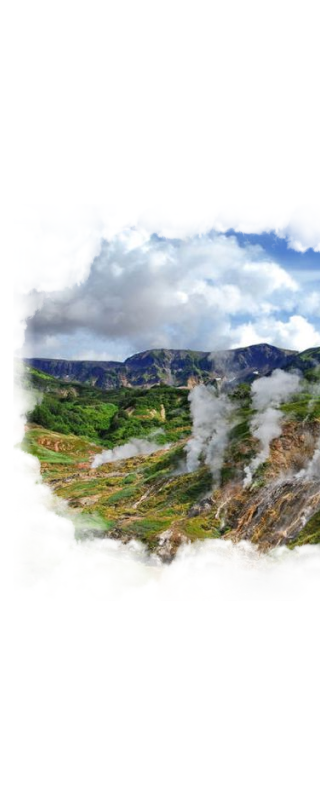

<section class="day7-section section">
    <div class="container">
        <div class="day7">
            <h2 class="main-title"><span class="main-span">День 7.</span>  Вертолетная экскурсия 
            в Долину Гейзеров и кальдеру 
            вулкана Узон / свободный день</h2>
        </div>
        <div class="day7-text">
            <ul>
                <li>
                    <p class="day7-textblock1 main-text">Экскурсия проводится в содружестве с «ВИТЯЗЬ-ТРЕВЕЛ», крупнейшим оператором вертолётных туров на Камчатке. Выезд в аэропорт «Витязь –Аэро». К вашим услугам –современный аэропортовый комплекс, включающий в себя удобный зал ожидания, кафетерий, сувенирный магазин.</p></li>
                <li>
                    <p class="day7-textblock2 main-text">Перелёт до Долины гейзеров занимает 1 час 10 минут. По пути, при благоприятных условиях, вы осмотрите два действующих вулкана – Карымский и Малый Семячик из окон вертолёта.</p></li>
                <li>
                    <p class="day7-textblock3 main-text">Перелёт и посадка в кальдере Узон. Кальдера образовалась в результате обрушения стенок древнего вулкана около 40 тысяч лет назад, на её дне очень ярко проявляется гидротермальная деятельность.Сотни столбов пара вырываются здесь из жёлтых фумарольных полей. Осмотр термальных полей.</p></li>
            </ul>  
        </div>
            <!--  -->
        <div class="slider-text-block">
            <div class="day7-slider">
                <!-- <ul>
                    <li></li>
                    <li></li>
                    <li></li>
                </ul>
                <ul>
                    <li>
                        <button type="button"></button>
                    </li>
                    <li>
                        <button type="button"></button>
                    </li>
                </ul> -->
            </div>
            <div class="day7-info">
                <p class="day7-textblock4 main-text">Перелёт и посадка в Налычевской долине. Купание в горячих источниках. Здесь же вам предложат обед - горячее, чай и камчатский морс. Трансфер в гостиницу.</p>
                <h3 class="dop">Дополнительные услуги</h3>
                <ul class="dop-box">
                    <li class="dop-li">
                        <h4 class="dop-title">Роуп Джамп</h4>
                        <p class="dop-text">Прыжки с высоты над водопадом. Записываться заранее. </p>
                    </li>
                    <li class="dop-li">
                        <h4 class="dop-title">Ледянки</h4>
                        <p class="dop-text">Прыжки с высоты над водопадом. Записываться заранее. </p>
                    </li>
                </ul>
            </div>
        </div>
    </div>
</section>
